貼圖版本總覽
10 月 2 日一天之內畫過的每一張，從早上第一批到現在，一張都沒刪。每組下面寫改了什麼、盲猜被讀成什麼、留下還是淘汰。
盲猜的做法：把字拿掉、順序打亂、標成 A、B、C，請沒看過答案的讀者猜每張在說哪一句話、對誰說。
早上・第一批試作
先試了幾種角色和畫法：白貓、黑貓、桃子、三花貓、柯基，用程式手寫向量線條。字細、線條死板，沒有一張像是會被買的。
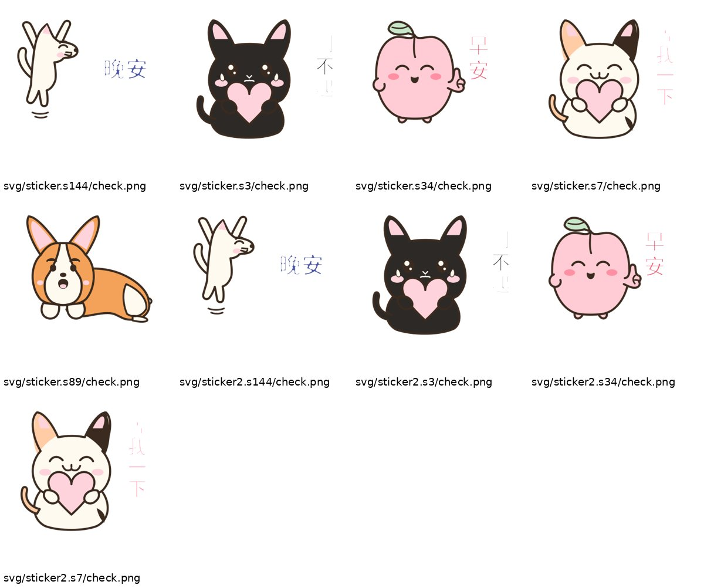
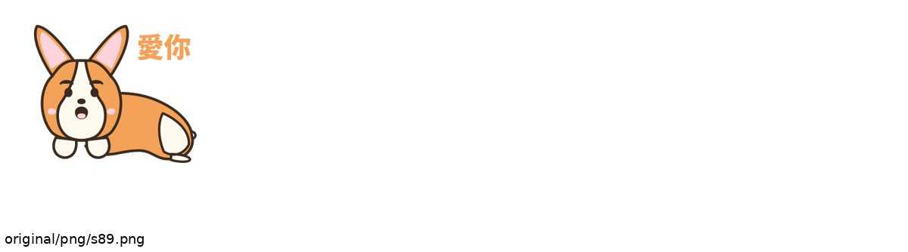
另外試了拿兩張參考圖混合出新角色（熊貓、白糰子）。參考圖不是我們的，這條不能拿去賣，只留作紀錄。
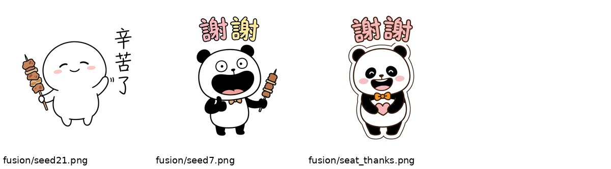
第一版・麻糬狗
奶油色垂耳狗，八句：早安、收到、哈哈哈、謝謝、對不起、等我一下、好喔、晚安。
和 LINE 台灣原創熱門榜前幾名放在一起比，差在四件事：字沒有態度、線條沒有手感、臉不會變形，而且可愛垂耳狗這個位置已經很擠。把字遮掉以後，八張只看得出兩張。淘汰。
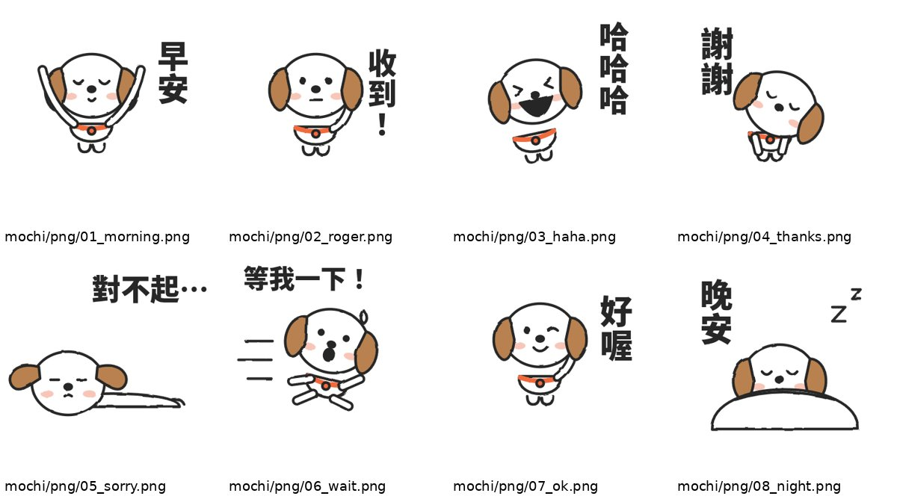
第二版・包子上班族
換角色：一顆包子，配一杯豆漿同事，鉛筆蠟筆質感。八句改成上班族的話：早安、收到、已讀不回、下班了沒、你看看你、我先閃了、謝主隆恩、躺平。
盲猜一半看得懂：已讀不回、躺平、收到讀對；你看看你、我先閃了、謝主隆恩、早安讀錯。毛病是字是打字的、在另一條帶子上，八張有六張是同一張苦臉，顏色太淡，縮小就糊成一團白。
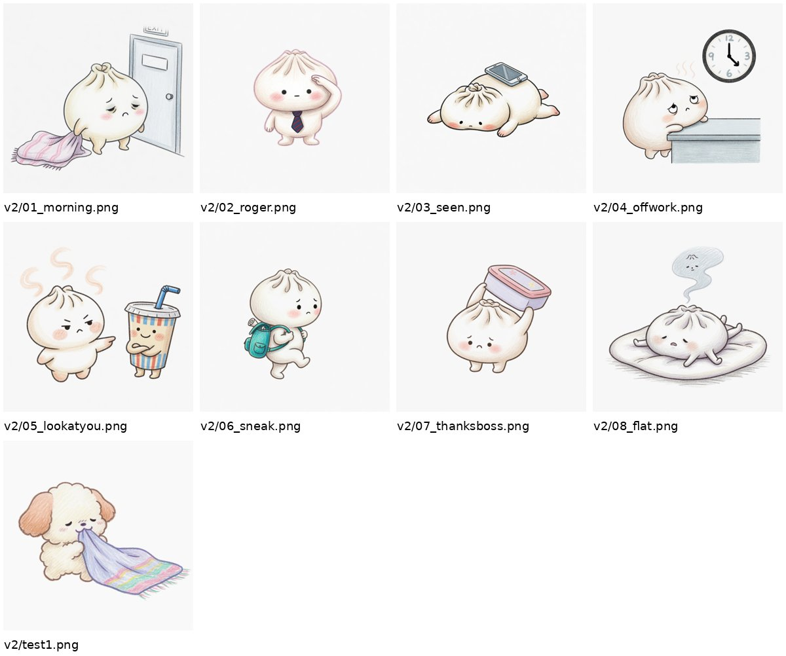
第三版・字畫進圖裡、每張換一張臉
手寫字、粗深色邊、每張不同表情。上面是正式版，下面是給盲猜用的無字版。
盲猜約 5 分（滿分 8）：早安、我先閃了修好；收到退步（冷汗加歪領帶，被讀成「心好累」），謝主隆恩被讀成「吃飯囉」，你看看你被讀成「我就說吧」。
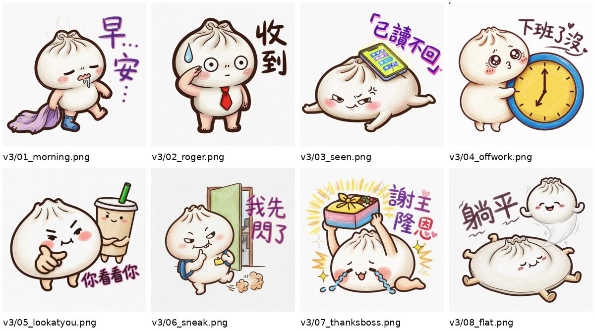
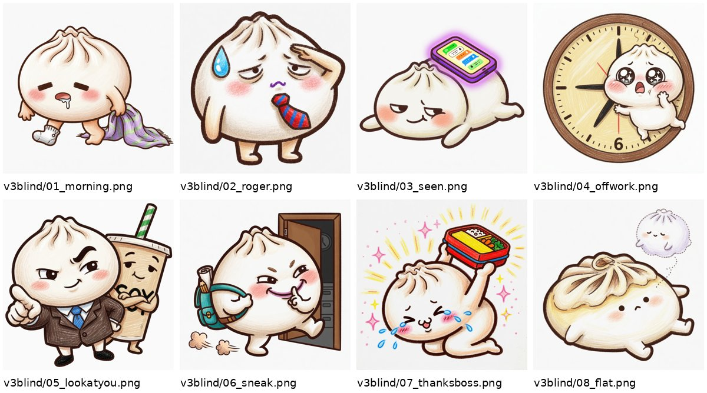
第四版・四張重畫
收到改成筆直軍禮加打勾；謝主隆恩加一顆戴眼鏡的大肉包老闆；你看看你改成嫌棄臉；下班了沒抱時鐘。
盲猜 6.5 分：收到修好（每個讀者都讀對）。謝主隆恩全錯（「又要加班吃便當」「便當被拿走」）；你看看你只算半對，被讀成「都你害的」。
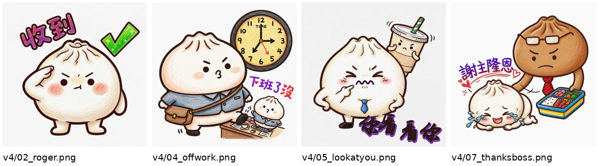
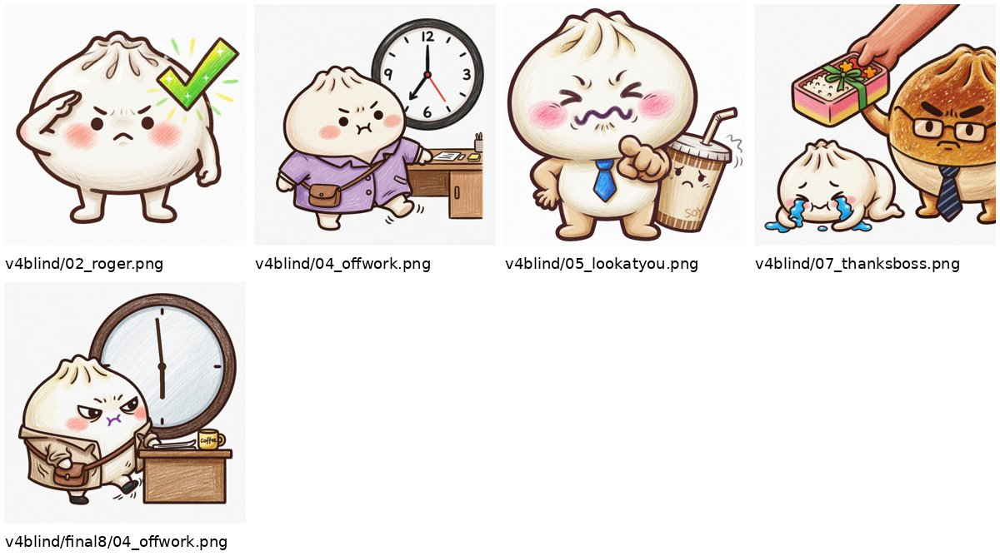
下班了沒的時鐘，生圖模型連三次畫錯時間（三點、六點、七點，還自己加數字）。後來改成只叫它畫空白圓鐘，指針用程式畫在五點五十九。
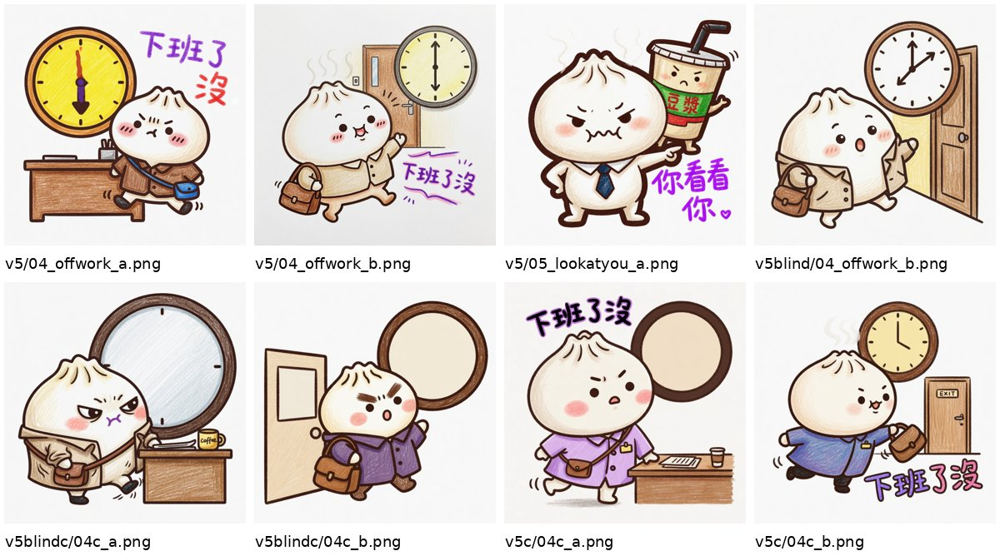
第五輪・每張出兩種構圖讓讀者挑
謝主隆恩兩版（跪著高舉接便當／伏地叩謝），你看看你兩版（扶額／捂臉偷看），下班了沒加一個雀躍版。
- 下班了沒：留雀躍版，三個讀者都讀成「耶，下班啦」。
- 謝主隆恩：留跪接版，兩個讀者直接寫出「謝主隆恩，謝謝老闆」。伏地版淘汰，被讀成「又被塞工作」。
- 你看看你：兩版都沒過。讀者把豆漿杯當成一杯飲料，猜出來的話都在講飲料（「這杯誰的」「超難喝」）。
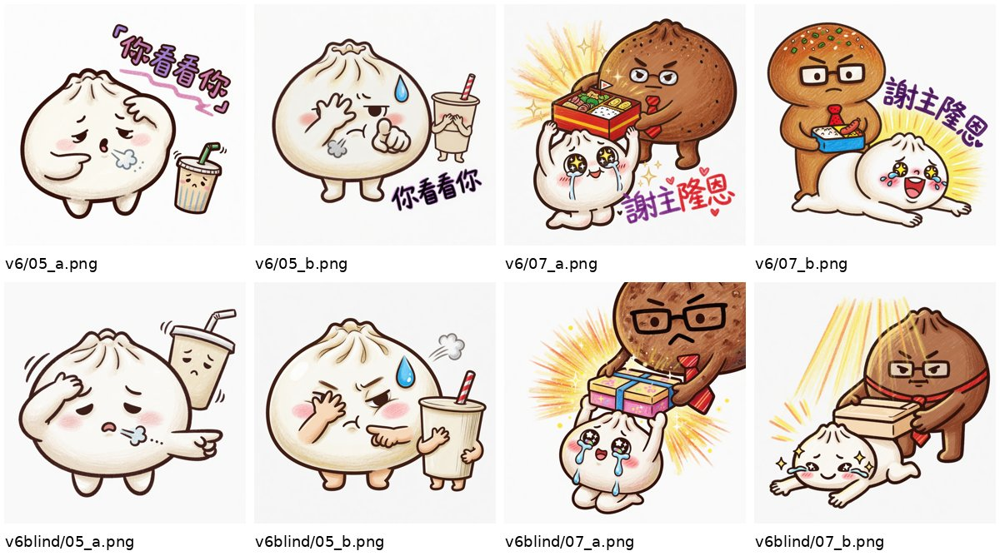
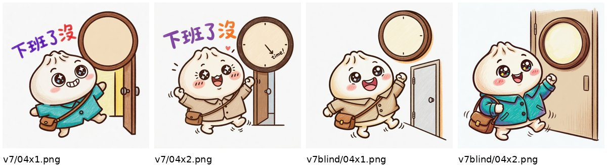
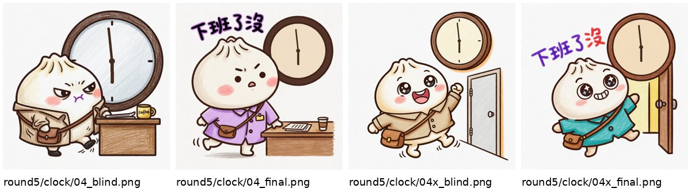
現在・換本機生圖重畫最後一張
八句裡七句已經定案。你看看你改成拿掉豆漿、包子正面朝鏡頭指著收到貼圖的人、扶額嘆氣，用前面的包子當參考圖，讓長相一致。畫好會再盲猜一次。
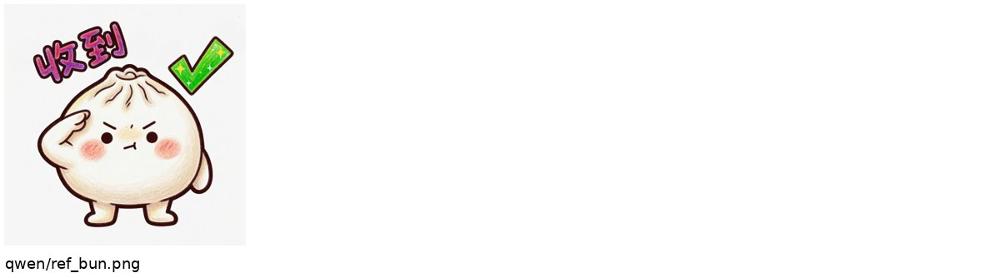